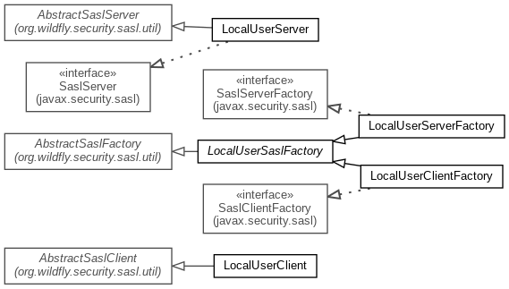

JavaScript is disabled on your browser.
Skip navigation links
Overview
Package
Class
Use
Tree
Deprecated
Index
Help
WildFly Elytron 1.6.6.Final
Prev Package
Next Package
Frames
No Frames
All Classes
Package org.wildfly.security.sasl.localuser

Class Summary
Class
Description
LocalUserClient
LocalUserClientFactory
LocalUserSaslFactory
Base class for the
JBOSS-LOCAL-USER
SASL mechanism.
LocalUserServer
LocalUserServerFactory
Skip navigation links
Overview
Package
Class
Use
Tree
Deprecated
Index
Help
WildFly Elytron 1.6.6.Final
Prev Package
Next Package
Frames
No Frames
All Classes
Copyright © 2020
JBoss by Red Hat
. All rights reserved.